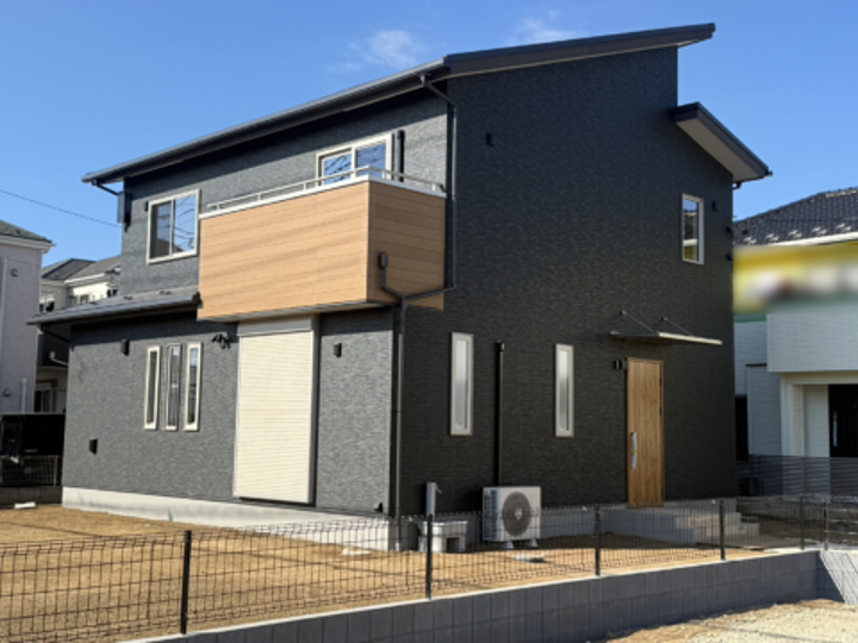
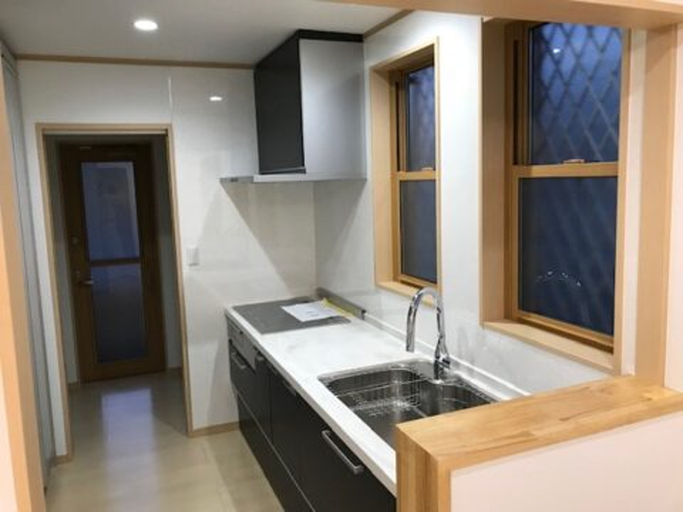
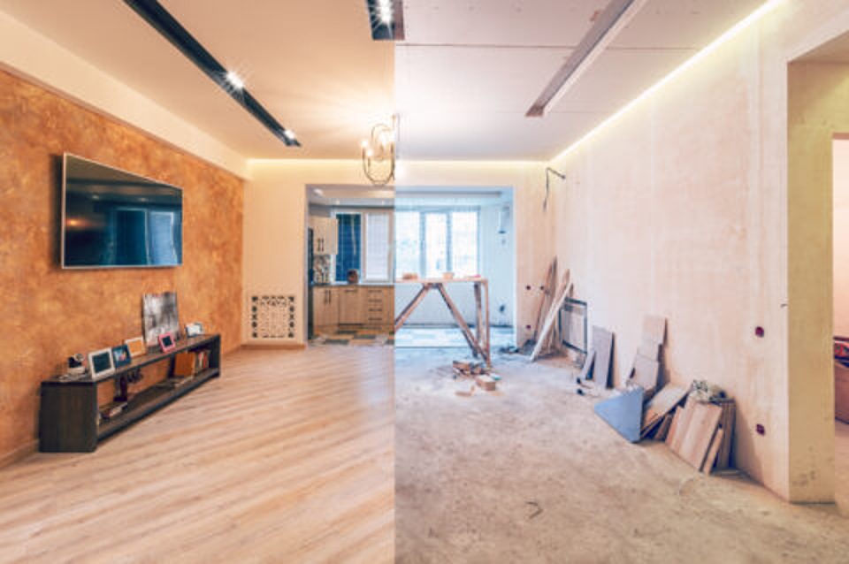
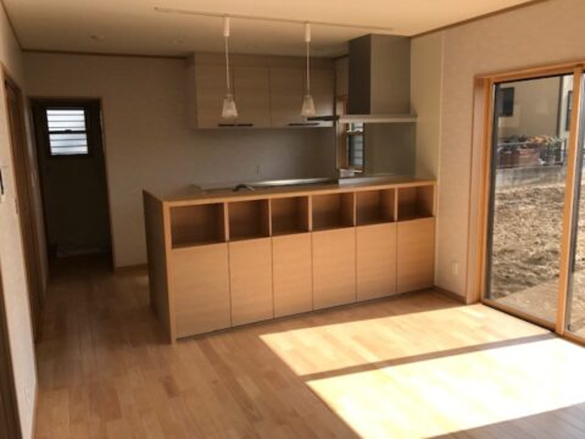
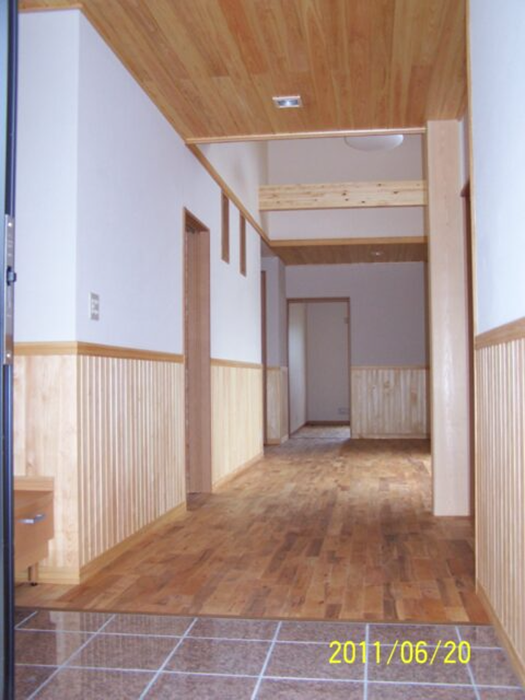
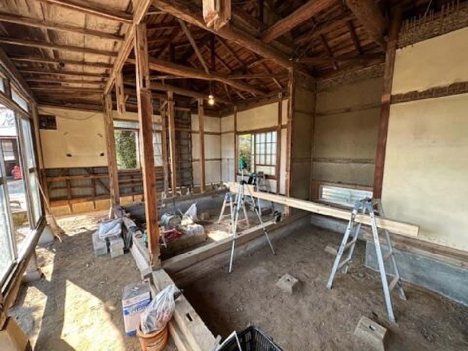
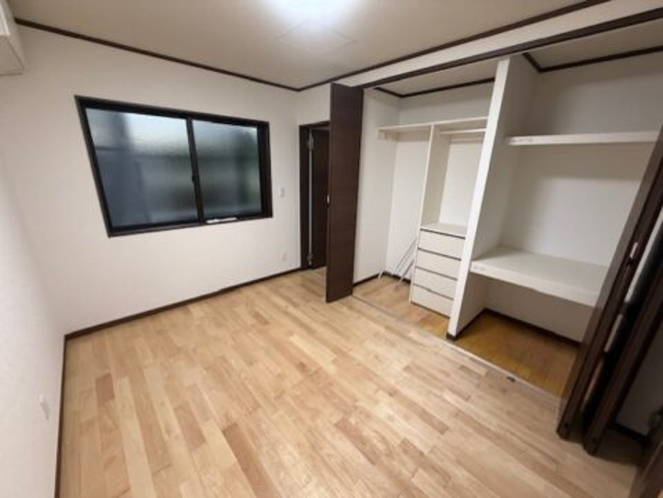
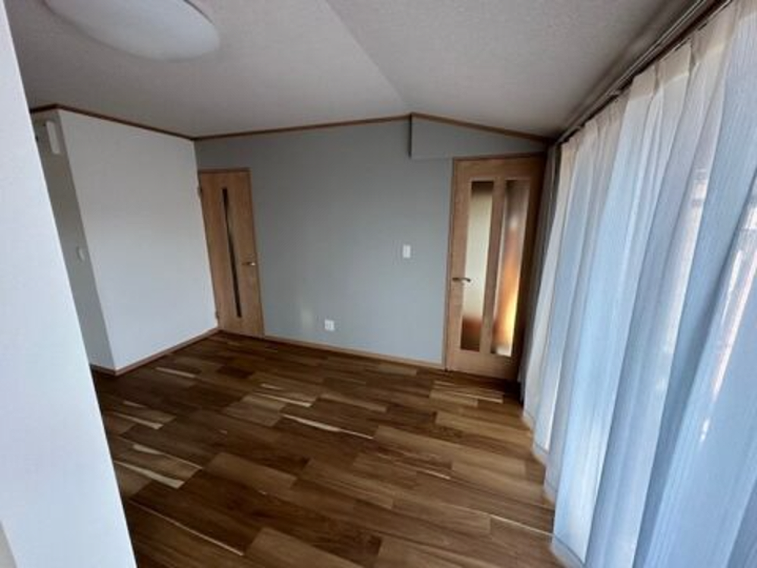
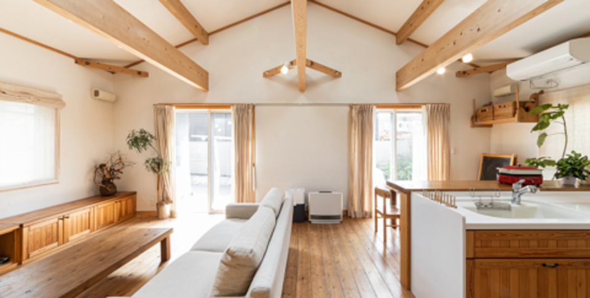

注文住宅
理想の暮らしをカタチにする、一からの家づくり。
新築からリフォームまで、自社の職人が最後まで責任を持って施工します。下請け任せにしない「顔の見える工事」で、上尾市を中心に多くのご家庭の暮らしを支えてきました。
はじめての方へ：ご依頼の前に知っておきたいこと →


SINCE
1940
創業0年
昭和42年創業、地域に根づいた実績
自社施工体制
下請け任せにしない一貫対応
ご相談・お見積り無料
まずはお気軽にご連絡ください
上尾市中心に対応
桶川市・伊奈町・北本市・鴻巣市ほか
SERVICE
新築・リフォーム・増改築。建物の構造を理解した職人が、規模を問わずお引き受けします。

理想の暮らしをカタチにする、一からの家づくり。

注力水回り・フローリングなど、暮らしの「困った」を解消。

家族構成の変化に合わせた間取りの見直し。
水回りの不便やお悩みは、放っておくと大きなトラブルにつながることも。まずは無料相談から、あなたの暮らしに合った解決策をご提案します。
リフォームについて詳しく見る →VOICE
★★★★★
水回りの相談から丁寧に対応いただき、想像以上の仕上がりでした。
上尾市・K様
★★★★★
職人さんの対応が丁寧で、近所への配慮も感じました。
桶川市・S様
★★★★☆
見積りが分かりやすく、追加費用の説明も納得できました。
伊奈町・T様
WORKS

REASONS
下請けに丸投げせず、自社の職人が現場を担当。中間マージンが発生しない分、適正な価格でご提供できます。
工程管理・近隣配慮まで一貫して対応。安全第一で、施工中も安心してお過ごしいただけます。
昭和42年の創業以来、新築からリフォームまで幅広い工事で培った技術で、細部までこだわった施工を実現します。
ACCESS
［ Googleマップ埋め込み ］
REFORM ／ 水回り・フローリング
その水回りの悩み、
もう我慢しなくて大丈夫です
寒い浴室、使いにくいキッチン、きしむ床。上尾市の北新建工が、自社施工で根本から解決します。まずは無料の現地調査から。
在来浴室のタイルのひび割れや、キッチン下の水漏れは、放置すると下地の腐食やカビの原因になります。早めの対応が結果的に費用を抑えることも。
「安いと思って頼んだら、下請けの下請けが来て対応が雑だった」というお声を耳にすることがあります。価格だけでなく、誰が施工するかも重要です。
「そのうち直そう」と先延ばしにした分だけ、毎日の暮らしにくさが続きます。まずは無料相談で、解決の一歩を踏み出しませんか。
COMPARE
| 北新建工 | 元請け経由の他社 | リフォーム仲介業者 | |
|---|---|---|---|
| 施工体制 | 自社の職人が直接施工 | 下請け・孫請けへ丸投げされることも | 提携先の業者へ外注 |
| 価格 | 中間マージンなしの適正価格 | 元請けマージンが上乗せ | 仲介マージンが上乗せ |
| 現場対応 | 現場責任者が一貫して管理 | 担当が分断されがち | 現場を直接知らないケースも |
| 連絡・相談 | 現場の職人に直接相談可能 | 間に人が入り伝達が遅れがち | コールセンター経由になることも |

WHY US
中間マージンが発生しないため、同じ予算でもより良い提案が可能です。
工程・安全・近隣配慮まで一貫対応。工事中も安心してお過ごしいただけます。
創業59年、新築からリフォームまで培った技術で、細部までこだわった施工を実現します。
在来浴室からユニットバスへ。寒さの悩みを解消。
使い勝手の悪い古いキッチンを最新設備へ刷新。
掃除のしやすい設備へ交換し、清潔感がアップ。
「冬でも暖かくお風呂に入れるようになりました。」上尾市・K様
「見積りの内訳が明確で安心して依頼できました。」桶川市・S様
「工事中の対応が丁寧で近所トラブルもありませんでした。」伊奈町・T様
PRICE
| 工事内容 | 価格目安 |
|---|---|
| 浴室リフォーム（ユニットバス化） | 80万円〜150万円 |
| キッチンリフォーム | 60万円〜120万円 |
| フローリング張替え（6畳） | 8万円〜18万円 |
※ 価格・工期はデモ用の目安数値です。正式なお見積りは現地調査のうえ無料でご提示します。
解体後に判明する劣化がある場合のみ、事前説明・ご了承のうえで発生することがあります。
浴室リフォームで5〜10日程度、キッチンで3〜5日程度が目安です。
昭和42年創業、上尾市に根ざした自社施工体制。埼玉県上尾市中新井508-4。
NEW BUILD ／ 注文住宅
建てた後も、
直せる会社が建てる家。
北新建工は、創業59年のうち半分以上をリフォームにも費やしてきました。「何年後にどこが痛むか」を知っている職人が、はじめから設計と施工に関わります。
大手ハウスメーカー、工務店、設計事務所。それぞれ良さはありますが、「実際に家を建てるのは誰か」は意外に見えにくいものです。
本体価格の外にどんな費用がかかるのか、契約後になってから分かることも。当社は請負工事の粒度で内訳をお見せします。
引き渡し後に連絡が取れなくなる、担当者が辞めてしまう。当社は建てた家を自分たちで直し続ける会社です。
COMPARE
| 北新建工 | 大手ハウスメーカー | 設計事務所＋別途施工 | |
|---|---|---|---|
| 施工 | 自社の大工が施工 | 地域の協力会社へ発注 | 入札で選ばれた工務店 |
| 仕様の自由度 | 一棟ごとに間取りから検討 | 規格化された仕様の中から選択 | 自由度は高い |
| 費用構造 | 中間マージンなし | 広告宣伝費・経費が上乗せ | 設計監理料が別途 |
| 引き渡し後 | 施工した職人が相談窓口 | コールセンター経由 | 窓口が分かれることも |
※ 一般的な傾向をデモ用に整理したものです。
WHY US
何十年と住宅を直してきた経験から、傷みやすい箇所、将来手を入れやすい作りをご提案します。
木材の選定から造作まで、自社の職人が担当。現場での判断がその場でできます。
上尾市に59年。建てた後も、何かあればすぐに伺える近さがあります。
新築 ／ 上尾市
暮らしの中心を一階にまとめ、将来の居室変更を見越した間取りに。

新築 ／ 桶川市
構造材をあえて見せる設計。大工の仕事がそのまま意匠になります。
新築 ／ 伊奈町
キッチン・洗面・物干しを一直線に。共働きのご家族に合わせた設計です。
PRICE
| 内容 | 価格目安 |
|---|---|
| 注文住宅（本体工事） | 坪単価60万円〜80万円 |
| 30坪の場合の本体工事費 | 1,800万円〜2,400万円 |
| 付帯工事（外構・地盤・屋外給排水など） | 200万円〜400万円 |
| 設計・申請・諸経費 | 100万円〜200万円 |
※ 価格はデモ用の目安数値です。土地の状態や仕様によって変動します。
はい。建てられる土地かどうかの見方や、造成費用の目安など、建築側の視点でお手伝いします。
設計に3ヶ月〜半年、工事に4ヶ月〜6ヶ月が目安です（デモ用の目安）。
土台や構造の状態を見てからの判断になります。両方を手がけているので、どちらかに誘導することなく比較してご説明できます。リフォームのページもあわせてご覧ください。
FOR CUSTOMERS
ご依頼の前に、
まずこちらをご覧ください
工事は決して安い買い物ではありません。だからこそ、北新建工がどんな会社で、どんな流れで工事を進めるのか。ご不安を解消してから、安心してご依頼いただきたいと考えています。
「タイルの浴室が寒い」「キッチンの使い勝手が悪い」というお悩み、よく伺います。
床のきしみや傷みは、放置すると下地の劣化に繋がることも。
相見積りをとっても違いが分からない、という声にお応えします。
元請けから下請けへ、さらに孫請けへ…という多重構造ではなく、北新建工の職人が直接施工します。中間マージンが発生しない分、価格にも反映されます。
工程・安全・近隣への配慮まで、現場責任者が一貫して管理。工事中の「音」「匂い」「時間帯」にも気を配ります。
新築からリフォームまで幅広く手がけてきた経験があるからこそ、建物の構造を理解した上での提案ができます。
創業59年
昭和42年から上尾市で工事を続けています
自社施工
下請けへの丸投げをしない体制
5市町以上
上尾市・桶川市・伊奈町・北本市・鴻巣市ほか
0円
ご相談・現地調査・お見積りはすべて無料
もちろんです。相見積りは当然のことと考えています。当社は内訳の分かるお見積りをお渡ししますので、他社様の金額と項目を並べて比較していただいて構いません。「なぜこの金額になるのか」までご説明します。
当社は地域のご紹介で成り立ってきた会社です。強引な営業をして評判を落とすことは、いちばんの損失だと考えています。お見積り後のご連絡は、ご希望がなければ差し控えます。
1日で終わる工事も承っています。小さな工事でお付き合いが始まり、数年後に水回り全体をお任せいただくことも少なくありません。まずは気になる1か所からご相談ください。
リフォームは、お住まいになりながらの工事になることも多くあります。ご家族とご近所の生活を止めないために、現場責任者が次のことを徹底しています。
着工前に現場責任者が両隣・向かいのお宅へご挨拶。工期と作業時間をお伝えします。
解体などの大きな音が出る作業は時間帯を限定し、事前にお知らせします。
通り道の床・壁は毎日養生し、その日の作業が終わるたびに片付けます。
浴室・キッチンが使えない日程を事前に共有し、工程を暮らしに合わせて組みます。
見えなくなる下地の状態は写真に残し、工事の区切りごとにご説明します。
担当した職人が引き続き窓口に。些細な不具合もそのままご連絡いただけます。
SERVICE
新築・リフォーム・増改築。
住まいのことは一貫して。
工事の規模を問わず、自社の職人が現場を担当します。上尾市を中心に、桶川市・伊奈町・北本市・鴻巣市など埼玉県内に対応。
02 ／ REFORM
浴室のユニットバス化、キッチン・トイレ・洗面台の交換、フローリング張替え、内装の一新まで。1日で終わる小工事もお引き受けします。
03 ／ EXTENSION
お子様の成長や二世帯化など、家族構成の変化に合わせた間取りの見直し。既存の構造を確認しながら、必要な補強とあわせてご提案します。
WORKS & VOICE
上尾市を中心に、地域の暮らしに寄り添ってきました
水回りリフォームからフローリング張替え、新築・増改築まで。これまでの施工実績と、お客様からいただいた声をご紹介します。
← ドラッグで Before / After を比較できます（デモ：同一写真を加工）
CASE 01 ／ 水回り
寒さが厳しい在来浴室を、断熱性の高いユニットバスへ。「冬でも暖かくお風呂に入れるようになりました」とのお声をいただきました。
※ 費用・工期はデモ用の目安数値です。
フローリング ／ 桶川市
傷みの目立っていた床材を明るい色合いへ一新。ペットの爪痕にも強い素材を採用しました。15万円前後 ／ 工期2日
増改築 ／ 伊奈町
ご家族の成長に合わせて2階に居室を増設しました。280万円前後 ／ 工期約1ヶ月
新築 ／ 上尾市
ご家族の暮らしに合わせた間取り設計。木材の選定から施工まで自社で担当しました。
水回り ／ 上尾市
動線を見直し、収納量のある対面キッチンへ。90万円前後 ／ 工期4日
増改築 ／ 北本市
解体して判明した土台の傷みを補強し、床組みから作り直しました。
あなたのお住まいも、
ここに加わります。
★★★★★
水回りの相談から丁寧に対応いただき、想像以上の仕上がりでした。工事中の音や近所への配慮もしっかりしていて安心できました。
上尾市・K様
★★★★★
複数社に相見積りを取りましたが、内訳が明確で信頼できたので北新建工さんにお願いしました。
桶川市・S様
★★★★☆
工事後のアフター対応も丁寧で、些細な相談にも乗ってもらえました。
伊奈町・T様
実際にご依頼いただいたお客様の声をもっと知りたい方は、Google上の口コミもぜひご覧ください。
Googleクチコミを見る →PRICE
安心してご依頼いただける、
料金の目安
「工事の費用が分からず不安」という声にお応えして、代表的な工事の価格帯を公開しています。正式なお見積りは現地調査のうえ無料でご提示します。
| 工事内容 | 価格目安 | 工期目安 |
|---|---|---|
| 浴室リフォーム（在来浴室→ユニットバス化） | 80万円〜150万円 | 5日〜10日 |
| キッチンリフォーム（交換） | 60万円〜120万円 | 3日〜5日 |
| トイレ交換 | 15万円〜35万円 | 1日〜2日 |
| 洗面台交換 | 10万円〜25万円 | 1日 |
| フローリング張替え（6畳程度） | 8万円〜18万円 | 1日〜2日 |
| 増改築工事 | 150万円〜（規模により変動） | 要相談 |
| 新築工事 | 坪単価60万円〜80万円 | 要相談 |
※ 上記の価格・工期はデモ用の目安数値です。正式な金額はヒアリングと現地調査のうえご提示します。
同じ「浴室リフォーム」でも、建物の状態（土台の傷み具合、配管の劣化状況など）や選ばれる設備のグレードによって費用は変わります。現地調査で状態を確認したうえで、内訳の分かるお見積りをお渡ししますのでご安心ください。
解体してみて初めて分かる床下・壁内の腐食や、給排水管の劣化などが見つかった場合、追加費用をご相談させていただくことがあります。その際は必ず事前にご説明し、ご了承いただいてから作業を進めますので、後から知らされる高額請求のようなことはございません。詳しくはよくある質問もご覧ください。
| 項目 | 金額目安 | 内容 |
|---|---|---|
| 解体・撤去・処分 | 10万円〜15万円 | 在来浴室のタイル・土間の解体と廃材処分 |
| ユニットバス本体 | 40万円〜60万円 | グレード・サイズ・断熱仕様により変動 |
| 設備・給排水配管 | 10万円〜15万円 | 給湯・給排水の接続、劣化配管の交換 |
| 電気・換気工事 | 3万円〜8万円 | 照明・換気扇・浴室暖房乾燥機の配線 |
| 大工・内装工事 | 10万円〜20万円 | 土台の補強、開口部の造作、脱衣室の復旧 |
| 諸経費 | 5万円〜10万円 | 養生・運搬・現場管理費 |
※ 内訳はデモ用の一例です。実際のお見積りでは、この粒度で項目ごとの金額をご提示します。
| 広さ | 重ね張り（既存の上に施工） | 張替え（既存を撤去） | 工期目安 |
|---|---|---|---|
| 6畳 | 8万円〜13万円 | 12万円〜18万円 | 1日〜2日 |
| 8畳 | 11万円〜17万円 | 16万円〜24万円 | 2日 |
| 12畳（LDK） | 16万円〜25万円 | 24万円〜36万円 | 2日〜3日 |
床のきしみや沈みがある場合は、下地（根太・合板）の補修が必要になります。その場合は張替えをおすすめし、下地の状態を確認したうえで金額をご提示します。
01
浴室と洗面所のように隣接する工事を同時に行うと、解体・配管・養生が一度で済み、別々に頼むより費用を抑えられます。
02
毎日触れる部分は良いものを、使用頻度の低い部分は標準仕様に。メリハリのつけ方をご一緒に検討します。
03
水漏れやきしみを放置すると、下地の腐食まで直すことになり工事範囲が広がります。気づいた時点のご相談がいちばん安く済みます。
お支払いは銀行振込に対応しています。工事規模によっては着手金・中間金・完工金の分割払いも可能です。また、住宅の断熱改修・バリアフリー改修などは、国や自治体の補助制度の対象になる場合があります。該当しそうな工事はお見積り時にお知らせします。
STAFF
現場を支える、北新建工のスタッフをご紹介します
お客様の大切な住まいを預かる仕事だからこそ、一人ひとりが責任と誇りを持って現場に立っています。
※ 以下は実在スタッフ情報が確定するまでの仮のプロフィールです（文章量・トーンの型としてご確認ください）。
MESSAGE
［ 代表ポートレート ］
代表取締役社長
昭和42年の創業以来、上尾市を中心に多くのお客様の「暮らし」に携わらせていただきました。工事は決して安い買い物ではありません。だからこそ、私たちは「顔の見える会社」であり続けたいと考えています。下請けに任せきりにせず、自社の職人が最後まで責任を持つ。それが北新建工のものづくりです。これからも地域の皆様に信頼していただける会社を目指し、社員一同、日々技術を磨いてまいります。どうぞお気軽にご相談ください。
［ 写真 ］
現場責任者 ／ 勤続28年
入社28年、現場一筋のベテランです。若手時代は新築工事の大工として腕を磨き、ここ10年は水回りリフォームを中心とした現場管理を担当しています。「工事は段取りが8割」が口癖で、事前の現地調査を人一倍丁寧に行うことで知られています。近隣への挨拶回りも自ら率先して行い、「工事中、ご近所トラブルを一件も起こしたことがない」ことが密かな誇りです。休日は釣りが趣味で、現場でもお客様との会話のきっかけになることも。
［ 写真 ］
大工・水回りリフォーム担当 ／ 勤続15年
建築系専門学校を卒業後、北新建工一筋で15年。木造住宅の構造を熟知しており、リフォーム時に発見される下地の傷みなどにもすぐに対応できる知識と技術を持っています。「見えなくなる部分ほど丁寧に」を信条に、床下や壁の中の施工にも手を抜きません。フローリング張替えの技術指導も担当し、若手の育成にも力を入れています。二児の父で、子育て世代のお客様の「暮らしやすさ」への視点にも定評があります。
［ 写真 ］
大工見習い ／ 勤続4年
未経験からこの世界に入り、4年目。最初は道具の名前を覚えるところからのスタートでしたが、先輩たちの丁寧な指導のもと、着実に現場での経験を積んでいます。「お客様から直接『ありがとう』と言っていただけるのがこの仕事の一番の魅力」と話す、まっすぐな性格の持ち主。フローリング張替えや小規模な内装工事を任されることが増え、日々成長を実感しているところです。将来は水回りリフォームの現場を一人で任せられる職人を目指しています。
ご相談から工事後まで、担当が入れ替わらないことを大切にしています。現場責任者が窓口と工程管理を兼ねるため、伝達の抜け落ちが起こりにくい体制です。
7:30
会社に集合。資材と道具を積み、その日の段取りを確認。
8:30
現場に到着。養生をしてから作業開始。近隣へのご挨拶もこの時間に。
12:00
休憩。午後の作業順と、翻いた下地の状態を共有。
15:00
進捗を写真に記録。必要に応じてお客様にご報告。
17:00
片付けと清掃。翻日の段取りを整えて終了。
| 資格・登録 | 人数 | 役割 |
|---|---|---|
| 2級建築施工管理技士 | 在籍 | 工程・安全管理、施工品質の管理 |
| 木造建築士 | 在籍 | 新築・増改築の設計、構造の確認 |
| 建設業許可 | 取得 | 新築・リフォーム・増改築工事の請負 |
※ 資格保有者の人数・該当者名はヒアリング後に記載します。
2級建築施工管理技士、木造建築士などの有資格者が在籍。現場責任者を中心に、施工品質と安全管理を徹底する体制を整えています。
FAQ
よくいただくご質問
上尾市を中心に、桶川市・伊奈町・北本市・鴻巣市など、埼玉県内を中心に対応しております。エリア外でもお気軽にご相談ください。
解体してみて初めて分かる床下・壁内の劣化などが見つかった場合、追加費用が発生することがあります。その際は必ず事前にご説明し、ご了承いただいてから作業を進めますのでご安心ください。
銀行振込に対応しております。工事規模によっては着手金・中間金・完工金の分割払いも可能です。詳しくはお見積り時にご相談ください。
工事内容に応じた保証期間を設けております。工事完了後も気になる点がございましたらお気軽にご連絡ください。
もちろんです。ご相談・現地調査・お見積りはすべて無料です。他社と比較検討いただいて構いません。
その他ご不明な点は、お気軽にお問い合わせください。
お問い合わせフォームへ →HISTORY
創業から今日まで、
上尾市とともに
※ 沿革の詳細年・出来事は仮の内容です。正式な沿革情報に差し替えます。
昭和42年1967年
上尾市にて創業。大工職人としての請負工事を開始。
昭和50年代
新築工事の受注が拡大し、法人化。従業員を増やし組織体制を整備。
平成期
リフォーム・増改築工事へも事業を拡大。地域の口コミで依頼が広がる。
平成20年代
施工したお宅の「二度目の工事」のご依頼が増え、新築とリフォームの両方を担う体制へ。水回り・床など部分工事の相談が主軸になっていく。
平成30年代
在来浴室のユニットバス化やフローリング張替えの依頼が増加。解体後に判明する下地の傷みにもその場で対応できることが、自社施工の強みとして評価されるようになる。
2022年5月
ホームパージを開設。施工事例の発信を開始。
現在
新築・リフォーム・増改築を通じ、上尾市を中心に地域の住まいづくりを支え続けている。
59年
創業からの年数（昭和42年〜）
3事業
新築・リフォーム・増改築
3世代
ベテランから若手へ技術を継承
上尾市
創業から変わらない本拠地
01
創業当初からのモットー。工事の内容よりも、その家での暮らしがどうなるかを先に考えること。
02
下請けへの丸投げをしないというやり方を、規模を拡げすぎないことと引き換えに守ってきました。
03
一度工事をさせていただいたお宅から、何年も経って再びご連絡をいただくことが、最も大きな実績だと考えています。
「お客さま第一」というモットーは、創業当初から変わらず受け継いできたものです。工事は一度きりの大きな買い物だからこそ、施工後もお付き合いが続くような関係を大切にしています。
上尾市を中心に、桶川市・伊奈町など近隣エリアで長年施工を重ねてきました。ご近所からのご紹介でご依頼をいただくことも多く、それこそが何よりの信頼の証だと考えています。
上尾市の住宅は、当社が創業した頃に建てられた家がちょうど大きなリフォームの時期を迎えています。建て直すのか、直して住み続けるのか。どちらにしても、建物の構造を知っている職人が現場を見て判断することが大切だと考えています。これからも地域の住まいの相談先として、若手の育成と技術の継承を進めていきます。
COMPANY
昭和42年創業、
上尾市の建築会社です。
［ Googleマップ埋め込み ］埼玉県上尾市中新井508-4
RECRUIT
建築工事スタッフ、
募集中です
経験の有無や年齢は問いません。未経験者には一から丁寧にお教えします。上尾市の現場を中心に、住まいづくりを担う仲間を探しています。
※ 給与・休日等の詳細条件はヒアリング後に記載します。
実際に働くスタッフのプロフィールと現場での役割をご紹介しています。未経験入社4年目の職人の話も掲載。
CONTACT
ご相談・現地調査・
お見積りはすべて無料です。
工事内容が固まっていない段階でも構いません。まずは現在のお住まいのお困りごとをお聞かせください。
BLOG
現場からのお知らせと、
住まいのコラム